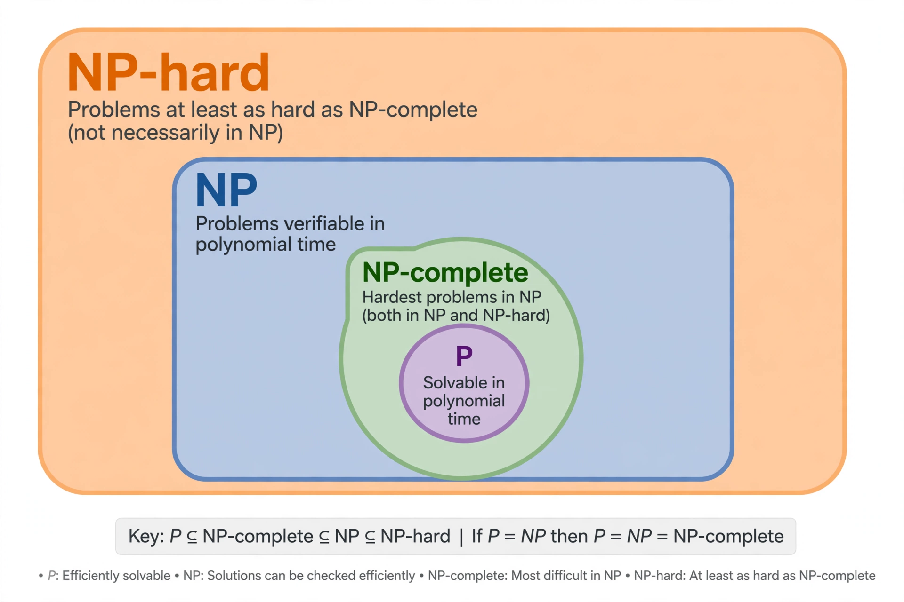

| NP-hardness | |
|---|---|
| Field | Computational complexity theory |
| Definition | At least as hard as the hardest problems in NP |
| Related classes | NP, NP-complete, P |
| Key question | P versus NP problem |
NP-hardness (nondeterministic polynomial-time hardness) is a concept in computational complexity theory used to classify problems according to their difficulty. A problem H is NP-hard if every problem in the class NP can be reduced to H in polynomial time; informally, H is at least as hard as the hardest problems whose solutions can be verified in polynomial time.
Formally, a decision problem H is NP-hard when there exists a polynomial-time many-one reduction from some NP-complete problem to H — equivalently, from every problem in NP. Optimization problems are called NP-hard when the corresponding decision problem is NP-hard. If an NP-hard problem also belongs to NP itself, it is called NP-complete.
Famous NP-hard problems include the travelling salesman problem (optimization version), the Boolean satisfiability problem (SAT), integer programming, the knapsack problem, the halting problem (which is NP-hard but not even decidable), and many scheduling, routing, and game problems — for example, generalized versions of Tetris, Minesweeper, and Pokémon have been shown to be NP-hard.
If any NP-hard problem could be solved in polynomial time, then every problem in NP could be, proving P = NP — one of the great open questions of mathematics, associated with the work of Stephen Cook and Leonid Levin and recognized as a Millennium Prize Problem. Because most researchers believe P ≠ NP, showing a problem NP-hard is taken as strong evidence that no efficient exact algorithm exists for it, shifting attention to approximation algorithms, heuristics, and special cases. Richard Karp's 1972 paper, which presented 21 NP-complete problems, helped establish the framework; Karp received the Turing Award in 1985 partly for this work.
See also: P versus NP problem, Cook–Levin theorem, Reduction (complexity)